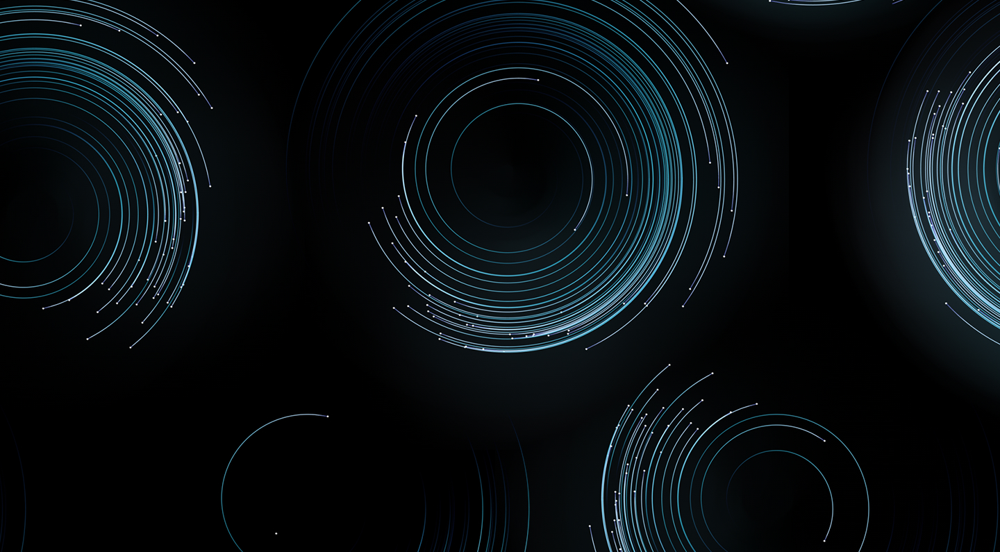

Международная программа CCE ICF.
Используйте методы коучинга в работе и
жизни.
КОУЧИНГ. ВОЗМОЖНОСТИ БЕЗ ГРАНИЦ
Старт обучения 24 октября 2020
Онлайн
Старт онлайн обучения 24 октября 2020
Очное в Санкт-Петербурге
Даты уточняются
Очное в Москве
Даты уточняются
Фундаментальная программа подготовки к международной сертификации ACSTH ICF с нуля. Обеспечивает глубокое и системное погружение в профессию, помогает активировать модель коучингового мышления, выработать профессиональную этику и изучить инструменты продвижения коучинговых услуг. Учебный процесс обеспечивают более 100 специалистов — ведущие, менторы, супервизоры, ассистенты. Участником программы может стать любой желающий с любым уровнем подготовки. Обучение доступно дистанционно и очно.
Программа была разработана в 2015 году известным коучем, вторым в России MCC ICF Ольгой Рыбиной. Выпускниками стали более 1000 студентов из 38 стран.